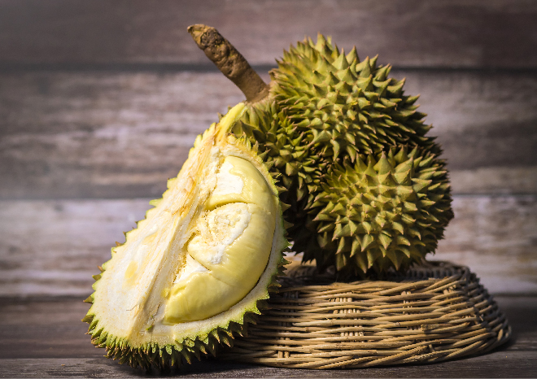

| MEMBUAT WEB BUAH BUAHAN DENGAN HTML | ||
|
MENU KIRI
|
DURIAN
 Durian adalah buah tropis yang berasal dari Asia Tenggara, dikenal sebagai "raja buah" karena ukurannya yang besar dan kulitnya yang berduri tajam. . Daging buahnya memiliki rasa dan aroma yang khas, sering kali manis, dan teksturnya lembut seperti puding, serta kaya akan nutrisi seperti karbohidrat, vitamin C, dan kalium. Daging buahnya dapat dimakan langsung atau diolah menjadi berbagai makanan lain |
MENU KANAN
|
| DI Buat Menggunakan HTML Oleh: Fabro Ragita Muryafo | ||